class: center, middle <br/><br/> .title[Dinámica de Fluidos Geofísicos] .subtitle[Fricción y capas de Ekman] <br/><br/> .author[Semestre 2024-I] .institution[Facultad de Ciencias] <br/> .date[5, 10 y 12 octubre de 2023] <br/><br/> <img style="width:100%" src="./figures/green_waves.png"> <!-- .note[Created with [{Liminal}](https://github.com/jonathanlilly/liminal) using [{Remark.js}](http://remarkjs.com/) + [{Markdown}](https://github.com/adam-p/markdown-here/wiki/Markdown-Cheatsheet) + [{KaTeX}](https://katex.org)] --> --- name: toc class: left <img style="width:40%" src="./figures/ink.jpg"> #Contenido 1. [Repaso](#repaso) 1. [Turbulencia por cizalla y viscosidad efectiva](#eddyviscosity) 1. [Fricción y rotación](#ekmannum) 1. [Capa de Ekman de fondo](#fondo) 1. [Generalización a velocidades no uniformes](#generalizacion) 1. [Capa de Ekman de superficie](#superficie) 1. [Capa de Ekman en FG reales](#FGreales) <!-- Comment out the next slide if you don't want the Table of Contents link --> --- layout: true .toc[[✧](#toc)] --- name: repaso class: left ## Al principio de la clase analizamos el experimento de las hojas de té y lo conectamos con sistemas atmosféricos de alta y baja presión: 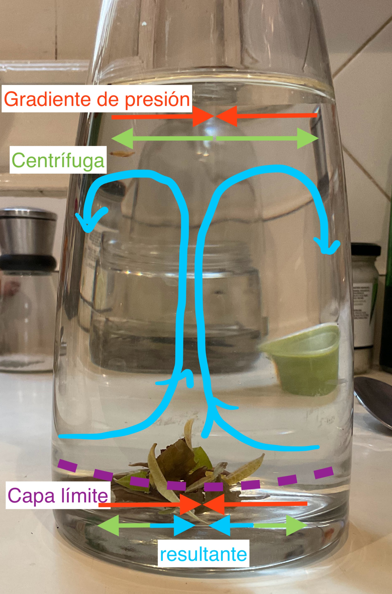 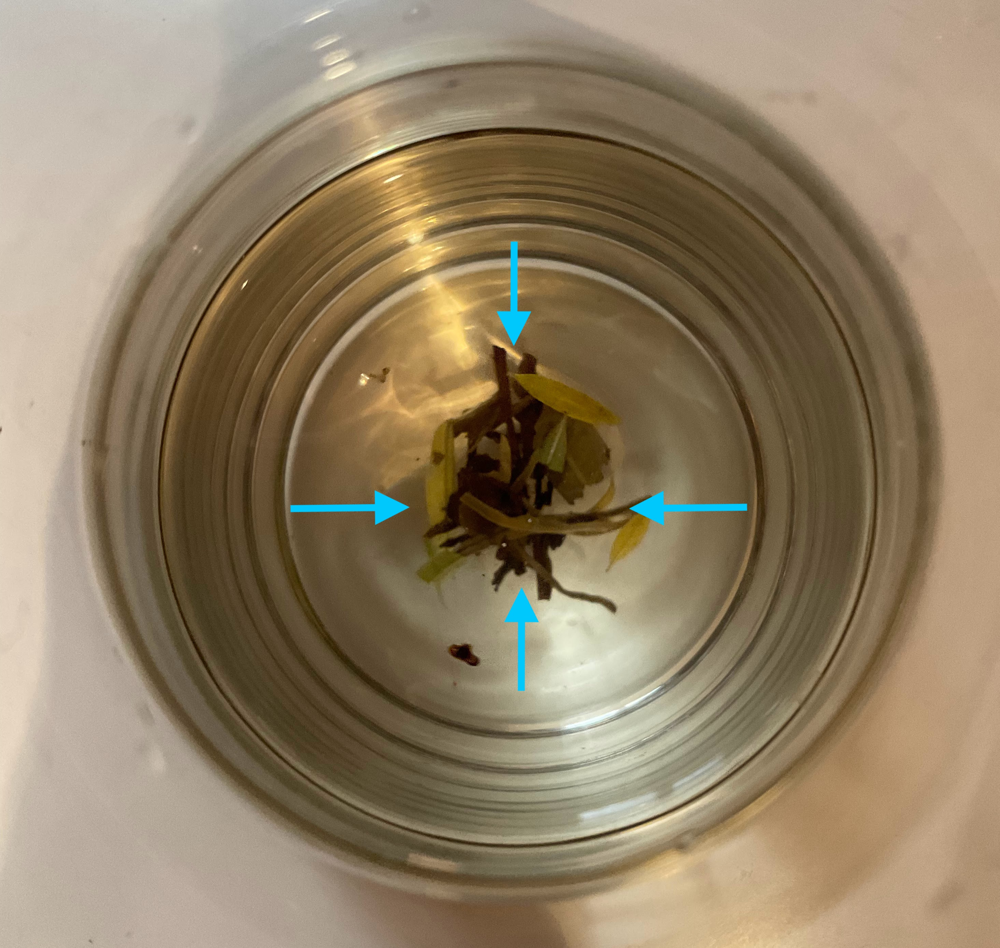 --- name: eddyviscosity class: left ## Turbulencia por cizalla o esfuerzos cortantes La fricción reduce la velocidad a cero en la vecindad de una frontera sólida --> genera cizalla vertical $\partial u / \partial z$ (cambio vertical en la velocidad horizontal). 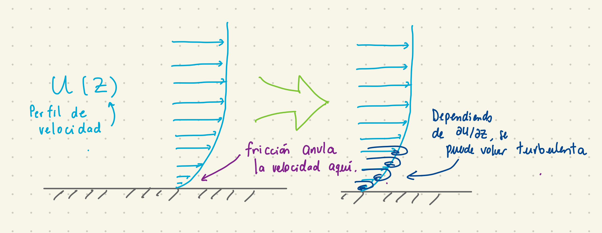 --- class: left Determinar el perfil $u(z)$ no es fácil (flujos geofísicos son turbulentos). Lo que sabemos viene principalmente de experimentos de laboratorio: $$u(z)=\mathcal{F}\left(\frac{\tau\_{f}}{\rho}, \nu, z\right)=\mathcal{F}(U,\nu,z)$$ donde $\tau_f$ es el esfuerzo sobre el fondo, $\rho$ es la densidad de fluido, $\nu$ es la viscosidad del fluido, y $z$ la altura sobre el fondo, y definimos la *velocidad turbulenta* como $$U=\sqrt{\frac{\tau\_{f}}{\rho}},$$ que físicamente está relacionada con la velocidad orbital de los remolinos que generan intercambio de momento y partículas (los de la imagen anterior). --- class: left En forma adimensional $$\frac{u(z)}{U}=$$ $$\mathcal{F}'\left(\frac{U z}{\nu}\right).$$ Si tenemos rotación ambiente, el parámeto de Coriolis entra en escena y la ecuación anterior depende de 2 parámetros ${U z}/{\nu}$ y ${fz}/{U}$. --- class: left ### Perfil $u(z)$ logarítmico .left-column[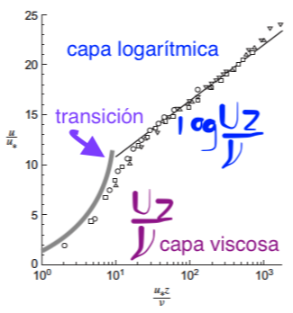 .caption[Imagen de Pope (2000). la recta corresponde al perfil log de la ec adimensional para $u(z)$ sin rotación.]] .right-column[* Determinación experimental de $\mathcal{F}'$. Gráfica de $u/U$ vs. log${U z}/{\nu}$ es una recta entre $10^1$ y $10^3$: $$u(z)=\frac{U}{\Kappa}ln\frac{Uz}{\nu}+5.2 U,$$ donde $\Kappa=0.41$ es la constante de von Kármán. * Cerca de la frontera domina la viscosidad (capa viscosa) ] --- class: left </br></br> Debemos "pegar" ambas soluciones para tener un perfil continuo. El valor de $Uz/\nu$ que satisface ambas ecuaciones es $$\frac{Uz}{\nu}= 11 = 2.5\ln{(11)}+5.$$ Esto nos permite definir la altura de la capa límite viscosa $\delta$ como el valor de $z$ para el cual $Uz/\nu= 11$: $$\delta=11\frac{\nu}{U}$$ (Hay distintas definiciones para esta altura). --- class: left Cuánto miden las capas límite viscosas en la atmósfera y el oceáno si: .right-column[**Océano** Viscosidad molecular del agua: $\nu=10^{-6}$ m$^2$/s Velocidad turbulenta: $U\ge 1$ mm/s ] .left-column[**Atmósfera** Viscosidad del aire en cntp: $\nu=1.5\times10^{-5}$ m$^2$/s Velocidad turbulenta: $U\ge1$ cm/s ] -- .right-column[ $\delta \lt 1$ cm ] .left-column[$\delta \lt 5 $ cm ] --- class: left ### Rugosidad del terreno Las $\delta$ que calulamos son más pequeñas que las irregularidades del fondo marino o del terreno. El perfil $u(z)$ sobre las irregularidades ya no depende de la viscosidad molecular sino de la altura de las irregularidades o la *rugosidad* $z_0$ .caption[(fracción de la altura promedio de los topes)]: $$u(z)=\frac{U}{\Kappa}\ln{\frac{z}{z_0}}.$$ .center[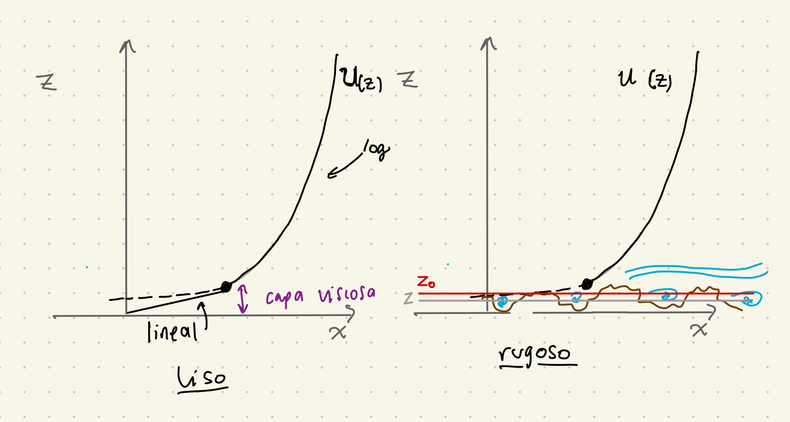] --- name: eddyviscosity class: left ### Viscosidad efectiva o turbulenta (eddy viscosity) * Flujo turbulento --> viscosidad efectiva será mayor que la molecular * Análogo a ley de Newton para flujos viscosos (esfuerzo tangente $\tau$ $\propto$ a cizalla con constante de proporcionalidad $\nu$) $$\tau=\rho_0\nu_E\frac{du}{dz},$$ donde la *viscosidad efectiva, turbulenta* o *eddy* es mucho mayor a la molecular $\nu$. Para un perfil log sobre terreno rugoso, la cizalla es $du/dz=U/\Kappa z$ y el esfuerzo es uniforme cerca de la frontera: $\tau=\tau_f=\rho U^2$, dando $$\rho_0 U^2=\rho_0\nu_E\frac{U}{\Kappa z}$$ y por ende $\nu_E=\Kappa z U$. --- class: left * La viscosidad turbulenta $\nu_E$ no es constante en el espacio (ni en tiempo, necesariamente). * Es una propiedad del flujo, no del fluido. * Dadas sus unidades ($[L^2][T^{-1}]$), podemos expresarla como el producto de una longitud por la velocidad turbulenta: $$\nu_E=l_m U,$$ donde $l_m=\Kappa z$ es una *longitud de mezcla*. --- name: ekmannum class: left ## Importancia de la rotación En el análisis dimensional de las ecuaciones de momento (clase 9?) comparamos cada término con el término de Coriolis. Para el término de fricción vertical el parámetro adimensional es el **número de Ekman**: $$Ek = \frac{\nu_E}{\Omega H^2},$$ donde $\nu_E$ es la viscosidad turbulenta, $\Omega$ la rotación ambiente y $H$ la escala de altura (profundidad) del movimiento. -- En flujos geofísicos (y lab), típicamente Ek<<1 --> fricción no es importante y despreciamos el término disipativo. ¿Qué perdemos? ¡Derivadas de segundo orden! No podemos aplicar todas las condiciones de frontera a la vez (Ej: el flujo desliza en el fondo). --- class: left ### Solución interior y capa límite (L. Prandtl, teoría de capa límite) En la capa límite de altura $d$, $Ek=\nu_E/\Omega d^2$~1 -----> $d$~$\sqrt{\nu_E/\Omega}$. .center[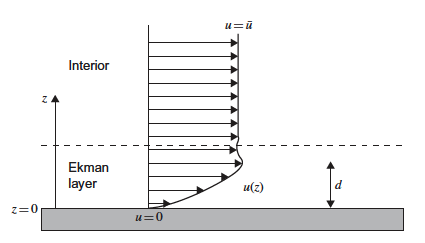] .caption[Imagen de Cushman-Roisin y Beckers (2011).] --- class: left **Capa límite con rotación: capa de Ekman** * La rotación impone una altura finita $d$ de la capa. * $d << H$, en el océano $d$~$10$ m * La rotación cambia la dirección del flujo, pero eso lo veremos en la siguiente clase. --- class: left ## Preguntas de repaso de la clase pasada: **1) Para un flujo sin rotación, el perfil de velocidad $u(z)$ en la capa logaritmica de un flujo sobre fondo liso depende de:** a) el esfuerzo ($\tau_b$), la viscosidad ($\nu$), la densidad ($\rho$) y la distancia al fondo ($z$). b) el esfuerzo ($\tau_b$) y la distancia al fondo ($z$). c) el esfuerzo ($\tau_b$), la viscosidad efectiva ($\nu_E$), la densidad ($\rho$) y la distancia al fondo ($z$). -- **Respuesta: a** --- class: left **2) La viscosidad turbulenta** a) es una propiedad del fluido, no del flujo. b) es mayor que la molecular. c) siempre es constante. -- **Respuesta: b** --- class: left ** 3) En una capa límite con rotación la profundidad o grosor de la capa $d$ escala como $(\nu_E/\Omega^2)^{1/3}$.** a) Cierto b) Falso -- **Respuesta: Falso**. En clase vimos que en una capa de Ekman, el número de Ekman $Ek=\nu_E/\Omega d^2 \approx 1$, por lo cual $d$ ~ $(\nu_E/\Omega)^{1/2}$. --- class: left name: fondo ## Capa de Ekman de fondo La estructura de este flujo consiste en un flujo interior horizontal constante $\bar{u}$ y una capa delgada en donde el efecto de la fricción lleva a cero la velocidad horizontal en la frontera: .center[] .caption[Imágen de Cushman-Roisin y Beckers (2011).] Vamos a las notas para desarrollar los detalles... --- class: left ### En resumen: * La velocidad en la capa de Ekman de fondo se acerca a la velocidad interior en una profundidad $d=\sqrt{2\nu_E/f}$ (altura o grosor de la capa de Ekman). * El flujo en la capa de Ekman tiene una componente perpendicular a la dirección del flujo interior $\bar{u}$ distinta de cero. * Cuando $z \rightarrow 0$ la velocidad cerquita del fondo (no exactamente en el fondo) es a $45^{\circ}$ de la velocidad interior desviado a la izquierda del flujo interior. .center[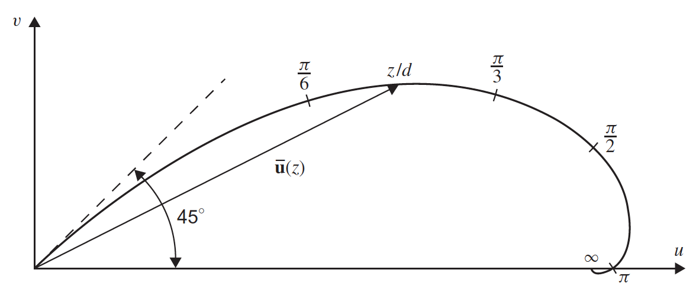] .caption[Imágen de Cushman-Roisin y Beckers (2011).] --- class: left El **transporte perpendicular al flujo interior** está dado por: $$V=\int_0 ^{\infty} v dz=\frac{\bar{u}d}{2},$$ y es porporcional al flujo interior y a la profundidad de la capa de Ekman. Las **dimensiones de V** son $[V]=[L/T][L]=[L^2/T]$ Ej. unidades: m$^2$s$^{-1}$. --- class: left name: generalizacion ###¿Qué pasa si el flujo interior no es uniforme? Flujo interior en equilibiro geostrófico pero que varía en el espacio. **(ver detalles en las notas)** El transporte para cada componente de la velocidad del flujo en la capa de Ekman está dado por: $$U=\int_0 ^{\infty} (u-\bar{u}) dz=-\frac{d}{2}(\bar{u}+\bar{v}),$$ $$V=\int_0 ^{\infty} (v-\bar{v}) dz=-\frac{d}{2}(\bar{u}-\bar{v}).$$ Además, el flujo en la capa de Ekman diverge o converge si el flujo interior tiene vorticidad relativa (rotacional$\ne 0$): $$\frac{\partial U}{\partial x}+\frac{\partial V}{\partial y}=-\frac{d}{2}\left(\frac{\partial \bar{v}}{\partial x}+\frac{\partial \bar{u}}{\partial y}\right)=-\frac{d}{2}\bar{\zeta}.$$ --- class: left ### Bombeo de Ekman ($\bar{w}$) El agua de la divergencia o convergencia proviene del interior. Esto no viola (mucho) la condición de geostrofía porque la velocidad vertical $\bar{w}$ que se generará en el interior es muy pequeña. .center[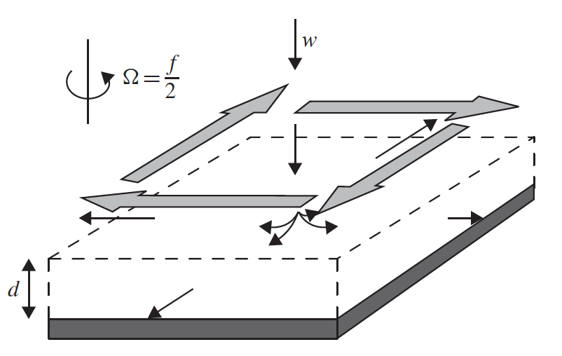] .caption[Imágen de Cushman-Roisin y Beckers (2011).] Obtuvimos una expresión para $\bar{w}$ integrando verticalmente la ecuación de continuidad: $$\bar{w}=\frac{d}{2}\left(\frac{\partial \bar{v}}{\partial x}+\frac{\partial \bar{u}}{\partial y}\right)=\frac{d}{2}\bar{\zeta}$$ --- class: left La surgencia $\uparrow$ ($\bar{w}>0$) o subsidencia $\downarrow$ ($\bar{w}<0$) serán mayores si: * aumenta la vorticidad (valor absoluto) del flujo interior, * aumenta la profundidad de la capa de Ekman ($=\sqrt{2 \nu_E/f}$), Esto último pasa si: * disminuye el valor de $f$ (Ej, nos movemos hacia el Ecuador), * aumenta la viscosidad $\nu_E$. **En el hemisferio norte**: * flujo ciclónico (**antihorario**) --> surgencia * flujo anticiclónico (**horario**) --> subsidencia **En el hemisferio sur** ($f<0$, definimos $d=\sqrt{2\nu_E/|f|}$): * flujo ciclónico (**horario**) --> surgencia * flujo anticiclónico (**antihorario**) --> subsidencia --- class: left ## Preguntas de repaso de la clase pasada **La *magnitud* del bombeo de Ekman será mayor si** a) aumenta la magnitud de la vorticidad relativa del flujo interior b) aumenta el parámetro de Coriolis c) aumenta la viscosidad d) a y b e) a y c -- **respuesta: e** --- class: left **Habrá surgencia (bombeo de Ekman positivo) si la vorticidad relativa del interior es ciclónica (antihoraria en HN).** a) verdadero b) falso -- **respuesta: verdadero** --- class: left **En la capa de Ekman de fondo en el HN cuando el flujo interior es uniforme, la velocidad cerca del fondo** a) en la misma dirección que el flujo interior. b) es a 45$^{\circ}$ a la izquierda del flujo interior. c) es a 45$^{\circ}$ a la derecha del flujo interior. d) en dirección opuesta al flujo interior. -- **respuesta: b ** --- class: left name: superficie ## Capa de Ekman de superficie .center[] .caption[Meme modificado de @jacoparti en twitter.] --- class: left ## Nansen y Ekman Durante sus expediciones al Ártico, Fridtjof Nansen observó que los icebregs se deplazaban hacia la derecha del viento, formando un ángulo de entre unos 20 y 40${^\circ}$ respecto a la dirección del viento. .left-column[ .center[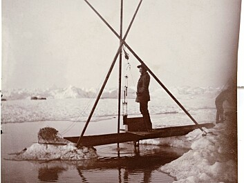] .caption[F. Nansen midiendo la temperatura de las aguas del Ártico el 12 de julio de 1894. (Imágen tomada de https://sciencenorway.no/arctic-forskningno-fridtjof-nansen/frozen-in-the-ice---polar-research-then-and-now/1387372. (Norwegian National Library)]] .right-column[ .center[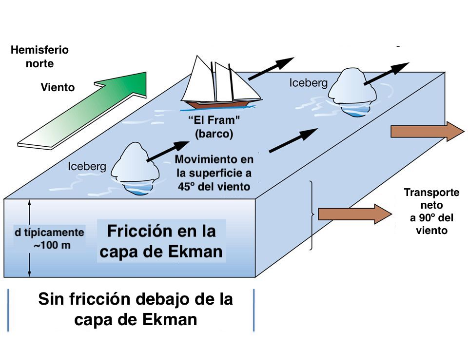] .caption[Imagen modificada de "Wind Driven Circulation" https://slideplayer.com/slide/5234539/]] --- class: left <br\> <br\><br\> Vagn Walfrid Ekman era estudiante de Nansen y Vilhelm Bjerknes y resolvió este problema para obtener su doctorado (Uppsala, 1902). <br\><br\><br\> En 1905 publicó, de manera más completa, la teoría de la espiral de Ekman que veremos hoy. <br\><br\><br\><br\><br\> Vamos a las notas... --- class: left name: FGreales ## Capa de Ekman en fluidos geofísicos reales La teoría de las capas de Ekman es una idealización, por lo cual no esperamos que las capas de frontera en la atmósfera y el océano sean **exactamente** iguales a lo que predice la teoría. .center[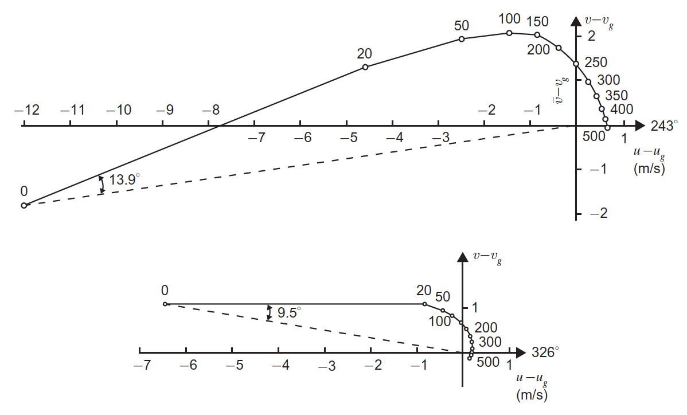] .caption[Fig. 8.10 Cushman-Roisin y Beckers. Vectores de viento menos viento geostrófico como función de la altura (m) cerca de Sicilia. Arriba: frontera entre viento cálido sobre viento frío. Abajo: Aire frío sobre superficie cálida del mar (original en Roll, 1965).] --- class: left Algunos factores que no toma en cuenta la teoría son: **turbulencia, estratificación y gradientes horizontales**. ### Turbulencia FG están en estado turbulento ($Re$ grandes). Una primera aproximación o *parametrización* fue cambiar la viscosidad molecular por una viscosidad eddy o viscosidad turbulenta. Hay parametrizaciones más refinadas: la turbulencia es mayor donde la cizalla es mayor y menor cerca de la frontera -> Ej. $\nu_E$ varía verticalmente. --- class: left En general (de modelos numéricos y observaciones), el ángulo entre la velocidad cerca de la frontera y el interior (Ekman fondo) o el esfuerzo del viento (Ekman superficie) es **bastante menor que el teórico de 45$^{\circ}$** (entre 5 y 20$^{\circ}$). Una escala vertical para el grosor de la capa de Ekman está dada por: $$d \approx 0.4 \frac{U}{f},$$ donde $U$ es la velocidad turbulenta (primeras diapositivas) y el factor de 0.4 se obtuvo de observaciones (puede variar un poco). --- class: left ### Estratificación * Limita el movimiento vertical y, en consecuencia, la mezcla vertical. * Capas de distintas densidades actúan menos coherentemente y se pueden generar ondas internas. * Reduce el grosor de la capa de Ekman y aumenta la desviación de la velocidad con la altura. ### Gradientes horizontales (de $T$) Durante el día sobre tierra o sobre agua calientita, la atmósfera está en estado constante de convección (calentamiento desde abajo). Bajo estas condiciones, otro factor importante de la dinámica, además del viento, es la intensidad del flujo de calor. Aquí, la dinámica de Ekman juega un paper secundario y la capa se llama simplemente *capa límite atmosférica*. --- ## Referencias: Cushman-Roisin y Beckers - Capítulo 8 Kundu y Cohen - Capítulo 13 </br></br></br></br></br></br></br></br> .note[Notas creadas con [{Liminal}](https://github.com/jonathanlilly/liminal) usando [{Remark.js}](http://remarkjs.com/) + [{Markdown}](https://github.com/adam-p/markdown-here/wiki/Markdown-Cheatsheet) + [{KaTeX}](https://katex.org)]